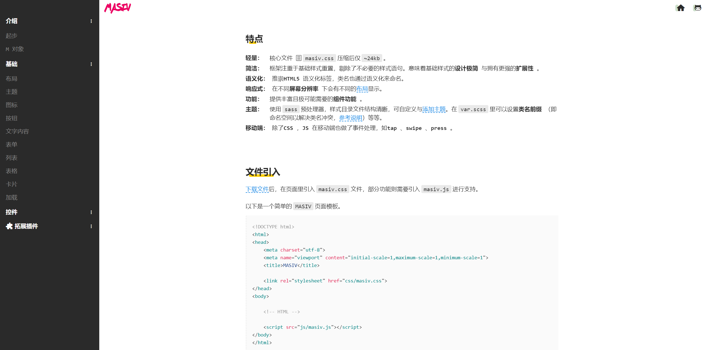

谈 MASIV
这是一个CSS框架，轻量与简洁，而且不只是如此。
其实，我更愿意把 MASIV 看做一个重置样式方案，简单来说，它尽力在把默认的样式调整为基础简洁的风格。在此基础上，再将一些常用的组件功能附加在上面，这些组件的开发也遵循着同样的规则。

因此，开发者或设计师如果需要修改样式，可以做少一点复写和新增样式属性的工作（工作量不会太多）。这些工作是不可避免的，不然只能说明咱们的审美观恰好有点相似。即便如此，它也不应该一成不变，我认定「审美疲劳」的情况是必然发生，所以需要更方便的让开发者去重绘。为了尽量减少这些工作，MASIV提供sass编译功能，而开发者只需要修改一些变量值即可，唯一麻烦的地方是可能你需要拥有一个编译sass的环境和部分编写能力。
与其它优秀的CSS框架相比较，MASIV除了看起有那么一点儿不一样，还有样式和结构上的实现设计。组件的HTML结构层次少，并且所需的CSS类名通常都不会超过 2 个。在Javascript方面，MASIV不依赖其它插件，仅使用自己的原生JS库，在性能与资源请求方面是一项优点。它只内涵实现部分组件功能和一些通用方法。此外，这个库也提供扩展开发功能。这一切的目的都是使之更能被方便灵活的阅读、使用。
写下这个框架，初衷只是闲暇时对前端知识进行归纳，也可以说是记录一些功能实现的思路参考与方法，然而写着写着不自觉往框架的方向上编写了。归根结底，MASIV只是一个选项，仅此而已。